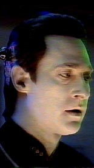

|
 |
"Qual é sua capacidade de memória?
Quantas operaes por segundo? Eu tenho um milho de
perguntas."
Ard'rian
"Temo que não tenha tempo para responder a
um milho de perguntas. Eu tenho uma misso a cumprir."
Data